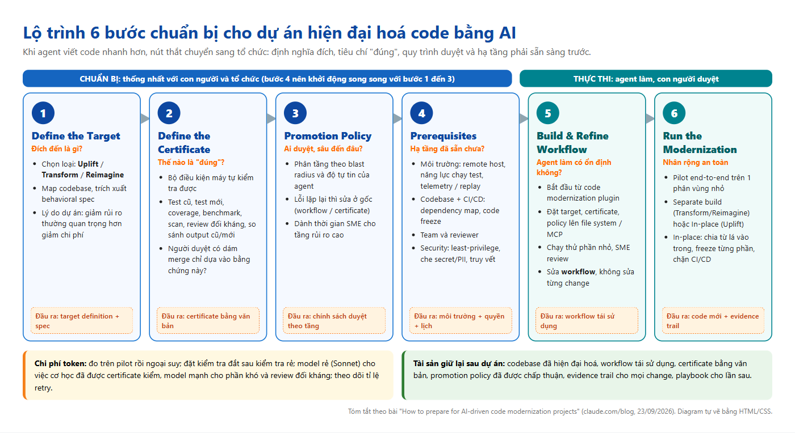
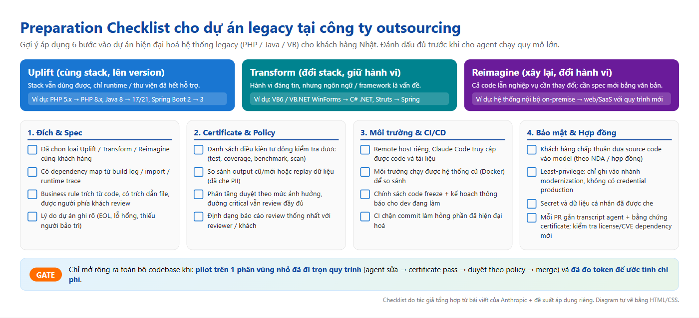

Tóm tắt 6 bước chuẩn bị từ bài viết của Anthropic — và cách mình định áp dụng vào các dự án migrate hệ thống legacy PHP / Java / VB cho khách hàng Nhật tại Scuti AI
Bài How to prepare for AI-driven code modernization projects (blog Claude, 23/09/2026, tác giả Jonah Ezekiel & Lexie Tonelli) xuất phát từ một quan sát đơn giản: với agent như Claude Code, việc viết thay đổi code cho một dự án modernization không còn mất nhiều năm mà chỉ còn vài tuần hoặc vài tháng. Nhưng tổ chức xung quanh — ai review, test chạy ở đâu, ai chịu trách nhiệm khi lên production — thì không tự nhanh lên theo.
Bài viết đưa ra một khung 6 bước, cộng thêm phần lưu ý về chi phí token:
Trước khi cho agent làm bất cứ gì, cần trả lời: hệ thống sau khi hiện đại hoá trông như thế nào? Câu trả lời quyết định loại modernization, và mỗi loại có “đích” được mô tả ở mức chi tiết khác nhau.
| Loại | Ý nghĩa | Khi nào chọn | Đích cần định nghĩa |
|---|---|---|---|
| Uplift | Nâng version trong cùng stack (ví dụ trong bài: C++11 → C++20) | Stack vẫn ổn, nhưng runtime hết hỗ trợ, lỗ hổng không được vá, dependency không nâng được | Phiên bản runtime + bộ package |
| Transform | Viết lại sang stack khác, giữ nguyên hành vi (ví dụ: COBOL → Java) | Bản thân stack là vấn đề, nhưng hành vi hiện tại đáng tin | Như Uplift + ngôn ngữ, framework, quy ước kiến trúc |
| Reimagine | Xây mới, hành vi cũng thay đổi | Cả code lẫn nghiệp vụ đều cần đổi | Như Transform + spec hành vi mới viết thành văn bản |
Việc quan trọng nhất ở bước này là tìm ra code cũ thực sự đang làm gì — thường khác với tài liệu. Quá trình này hay lôi ra những business logic không ai nhớ và các edge case ẩn. Claude có thể map dependency, mô tả workflow; plugin code modernization có các lệnh assess, map, extract-rules để đào business rule kèm trích dẫn tới file nguồn cho người review.
Bài viết nhấn mạnh: lợi ích lớn nhất thường là giảm rủi ro chứ không phải giảm chi phí — rủi ro từ lỗ hổng chưa vá, runtime hết hỗ trợ, và số kỹ sư còn hiểu stack cũ ngày càng ít.
Certificate là tập điều kiện / bài kiểm tra mà mọi thay đổi phải vượt qua, và quan trọng là máy tự kiểm tra được, không cần người. Nhờ có certificate, workflow của agent mới có thể tự lặp (sửa đến khi pass) hoặc tự gắn cờ để người xem.
Certificate nên được xây cùng với những người sẽ review và đưa thay đổi lên production (dev, nhóm người dùng, business lead). Phép thử hay: “Họ có thoải mái bấm merge chỉ dựa vào bằng chứng của certificate không?”
| Loại | Certificate dựa vào đâu |
|---|---|
| Uplift | So khớp với codebase gốc; test suite gốc là lõi |
| Transform | Vẫn so với hệ thống gốc, nhưng test cũ hiếm khi chạy được trên stack mới → dùng replay traffic production, differential testing cũ/mới, chạy song song với production |
| Reimagine | Neo vào behavioral spec: test viết từ spec, review đối kháng so với spec, differential check ở chỗ hệ mới giữ hành vi cũ. Chấp nhận sửa certificate khi spec rõ dần |
Agent có thể sinh ra rất nhiều thay đổi; nếu con người review từng dòng với cùng độ sâu thì dự án sẽ không bao giờ xong. Promotion policy là đường duyệt phân tầng, được thống nhất trước, quy định mức review của con người theo đặc điểm của từng thay đổi.
Bước này kéo theo các team ngoài dự án: platform/hạ tầng, QA/release, security/compliance. Bài viết khuyên mở các cuộc trao đổi này sớm, song song khi Bước 1–3 đang chạy, vì đây thường là chỗ chờ đợi lâu nhất.
| Nhóm | Cần chuẩn bị |
|---|---|
| Môi trường | Remote host riêng cho workflow, có codebase và các nguồn liên quan mà Claude truy cập được; năng lực chạy test theo yêu cầu certificate; các hệ thống củng cố certificate (telemetry production, setup chạy song song production, dữ liệu production để replay) |
| Codebase & CI/CD | Dependency map dựa trên build log, phân tích import hoặc runtime trace; kế hoạch xử lý dependency/package trong target; compatibility check sẵn sàng tích hợp CI/CD; chính sách code freeze nếu làm in-place; kế hoạch truyền thông cho dev đang hoạt động |
| Team & review | Các team phụ thuộc đồng ý tham gia (ký duyệt certificate, review promotion policy); phân bổ thời gian reviewer |
| Security & compliance | Đường truy cập model cho Claude Code được phê duyệt dùng với source code; least-privilege (chỉ ghi vào nhánh modernization, không có credential production); che secret và PII trong nhánh; mỗi change truy vết được qua PR gắn transcript agent + bằng chứng certificate; kiểm tra license và lỗ hổng cho dependency mới |
Dựng một workflow động bằng Claude Code, bắt đầu từ code modernization plugin.
Đặt mọi thứ workflow cần lên file system hoặc qua MCP: target, certificate, promotion policy, codebase, tài liệu, nguồn dữ liệu và tool.
Chạy trên phần nhỏ của codebase; SME review cả thay đổi, quá trình agent làm, và bằng chứng certificate.
Khi có vấn đề: sửa workflow, không sửa tay từng thay đổi. Mục tiêu là tin rằng khi nhân rộng, thay đổi vẫn pass certificate đều đặn và reviewer duyệt thoải mái theo policy.
Chạy trọn vẹn một vòng trên một phân vùng nhỏ — kể cả review và merge theo promotion policy. Sửa lỗi khi còn rẻ, lặp lại tới khi tự tin rồi mới mở rộng ra toàn bộ codebase.
| Mô hình triển khai | Phù hợp | Cách làm |
|---|---|---|
| Separate build | Transform, Reimagine | Xây hệ thống đích song song với hệ cũ, cutover khi hoàn tất |
| In-place | Uplift (hệ thống không được dừng, hoặc thay đổi quá nhanh để duy trì bản sao riêng) | Chia codebase thành phân vùng logic từ lá vào trong; freeze và modernize từng phân vùng; gate CI/CD để commit mới không làm hỏng phần đã modernize |
Bài viết thẳng thắn: lượng token dao động rất lớn giữa các dự án. Các yếu tố chính:
Bài viết dẫn tới plugin code-modernization trong repo anthropics/claude-plugins-official. Mình đọc thêm README của plugin (nguồn phụ, không nằm trong bài gốc) để hiểu cụ thể hơn:
modernize (ghi ý định vào INTENT.md) → modernize-preflight → modernize-assess → modernize-map → modernize-extract-rules / modernize-review → modernize-brief → uplift / transform / reimagine → modernize-verify → modernize-harden.modernize-verify trả về verdict PROVEN / PARTLY PROVEN / NOT PROVEN cho từng module — rất gần ý tưởng “certificate” của bài viết.Edit(/legacy/**)), secret được tách vào file gitignore, nội dung trong code phân tích được coi là không tin cậy, không tự commit.Mình gom 6 bước, câu hỏi chính và đầu ra của từng bước vào một sơ đồ để dùng khi kick-off dự án:

Scuti AI là công ty outsourcing tại Việt Nam; nhiều khách hàng Nhật đang vận hành hệ thống legacy (PHP cũ, Java/Struts, VB6/VB.NET). Dưới đây là cách mình đề xuất áp dụng 6 bước — đây là kế hoạch / đề xuất của mình, chưa phải quy trình chính thức của công ty.
| Bước | Áp dụng cụ thể |
|---|---|
| 1. Target | Ở giai đoạn báo giá, phân loại rõ với khách: PHP 5 → PHP 8 hay Java 8 → 17 là Uplift; VB6 → C#/.NET là Transform; “làm lại hệ thống theo quy trình mới” là Reimagine. Tài liệu đặc tả (仕様書) của hệ legacy thường đã cũ → dùng Claude Code / plugin trích business rule từ code kèm trích dẫn file, rồi xuất bản tóm tắt để khách xác nhận. |
| 2. Certificate | Biến certificate thành phần của tiêu chí nghiệm thu (受入基準) ghi trong hợp đồng / kế hoạch test: test cũ pass, so sánh output cũ/mới trên cùng bộ dữ liệu, scan bảo mật sạch, benchmark không tệ hơn. Khách Nhật thường rất kỹ về chất lượng, nên có bằng chứng tự động là lợi thế. |
| 3. Promotion Policy | Thống nhất với PM/BrSE và khách: module tiền, tính thuế, phân quyền → review đầy đủ; thay đổi cơ học (đổi API deprecated, cú pháp) → review mẫu. Báo cáo review theo một format cố định (song ngữ Việt–Nhật nếu cần). |
| 4. Prerequisites | Hỏi khách ngay tuần đầu: có được phép dùng AI với source code không (NDA/hợp đồng), có môi trường staging/dữ liệu test đã che 個人情報 không, ai bên khách ký duyệt. Dựng Docker cho hệ cũ để chạy so sánh. |
| 5. Workflow | Dựng workflow trên repo nội bộ với plugin code-modernization; giữ INTENT.md, certificate, policy trong repo để mọi thành viên (và agent) đọc cùng nguồn. |
| 6. Run | Chọn 1 module nhỏ, ít phụ thuộc làm pilot; đo token/thời gian để báo giá phần còn lại sát hơn. Với hệ thống khách vẫn đang phát triển song song, dùng in-place + code freeze theo phân vùng. |
Checklist mình dùng trước khi cho agent chạy quy mô lớn (tổng hợp từ bài viết + đề xuất riêng cho bối cảnh outsourcing):

Video quay lại quá trình đọc bài và tổng hợp: mở bài gốc, cuộn qua các bước chính, mở trang plugin, hiển thị 2 diagram và cuối cùng là blog hoàn chỉnh này.